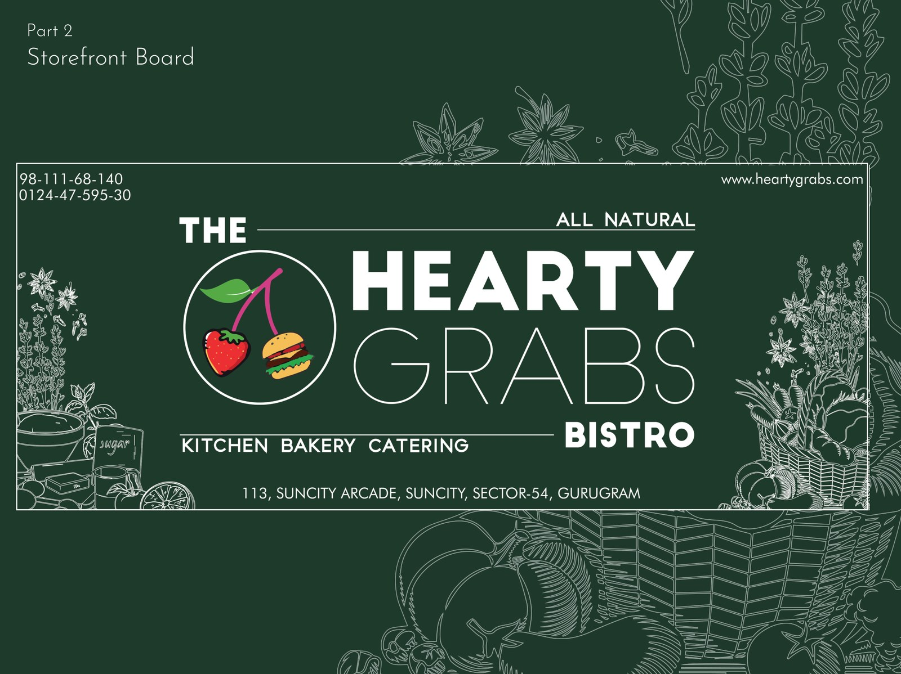
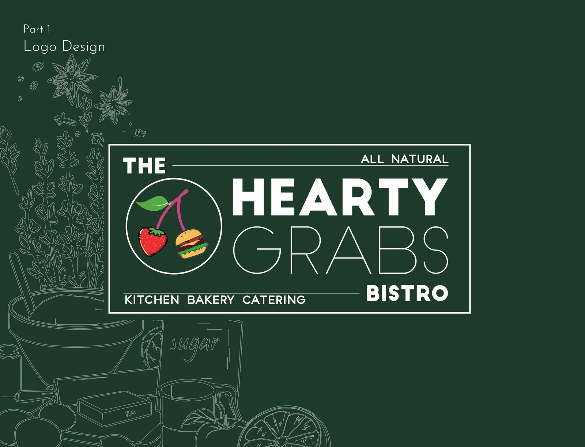

02The Identity

A logo and storefront board for a bistro that wanted to feel fresh, hearty and handmade — an emblem of cherries and a burger in a ring, set against line-drawn produce in deep green and white.

Hearty Grabs is a bistro — kitchen, bakery and catering — that sells the idea of living life while you can, on tailor-made, wholesome food. The identity had to carry that warmth: natural, appetising, handmade, never slick.
The answer is a single emblem and a deep-green world of line-drawn produce that the brand can live inside, from a logo to the board over the door.

Cherries, a burger, and a ring to hold them.
The logotype stacks a bold "HEARTY" over a lighter "GRABS", with "THE" and "BISTRO" bracketing it and "kitchen · bakery · catering" as a base line. To its left, a roundel holds a little still life — cherries and a burger — under an "all natural" banner. It reads as appetite and honesty at a glance.
For the storefront, the same lockup is set into a board and surrounded by finely drawn fruit, veg and kitchen things — a hand-illustrated border that makes a flat sign feel like a market stall. Address and contact sit quietly in the corners.